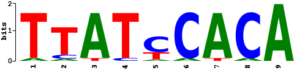

Transcriptional Factors
(see also: DNA Motifs)
Transcription factor binding sites: several sites are available but I have not been particular impressed with the results when analyzing prokaryotic sequences
-
BARTweb (Binding
Analysis for Regulation of Transcription) - This web server is to perform
BART, a bioinformatics tool for predicting functional factors (including
transcription factors and chromatin regulators) that bind at
cis-regulatory regions to regulate gene expression in human or mouse,
taking a query gene list or a ChIP-seq dataset as input.
(Reference: Ma W et al. (2021) NAR Genom Bioinform 3(2):lqab022). -
Cistrome-GO -
previously, this group developed a widely used method, BETA, to integrate
TF ChIP-seq peaks with differential gene expression (DGE) data to infer
direct target genes. Here, we provide Cistrome-GO, a website
implementation of this method with enhanced features to conduct ontology
analyses of gene regulation by TFs in human and mouse. Cistrome-GO has
two working modes: solo mode for ChIP-seq peak analysis; and ensemble
mode, which integrates ChIP-seq peaks with DGE data.
(Reference: Li S et al. (2019) Nucleic Acids Res 47(W1): W206–W211). - Tfsitescan (Institute for Transcriptional Informatics, Pittsburgh, U.S.A.) - This tool is intended for promoter sequence analysis and works best with sequences of ~500 nt.
-
PlnTFDB
- Plant Transcriptional Factor Database - allows BLAST searching
(Reference: P. Pérez-Rodríguez et al. 2009 Nucl. Acids Res. 38: D822-D872)
or here for related site. -
DBD -
Transcription factor prediction database (Gesellschaft für
Biotechnologische Forschung mbH (GBF), Braunschweig, Germany)
(Reference: D. Wilson et al. 2010. Nucl. Acids Res. 36: D88-D92) - rVista (Comparative Genomics Center, Lawrence Livermore National Laboratory, U.S.A.) - High-throughput discovery of functional regulatory elements in sequence alignments. Excluding up to 95% false positive transcription factor binding sites predictions while maintaining high sensitivity of the search.
-
TFmiR
- for deep and integrative analysis of combinatorial regulatory
interactions between transcription factors, microRNAs and target genes
that are involved in disease pathogenesis.
(Reference: Hamed, M. et al. 2015. Nucl. Acids Res.). -
ISMARA
(Integrated System for Motif Activity Response Analysis) - is an online
tool that models genome-wide expression or ChIP-seq data, in terms of
computationally predicted regulatory sites for transcription factors (TFs)
and micro-RNAs (miRNAs). The only input required for running ISMARA is
either expression data (microarray CEL files or RNA-seq FASTQ and
BED/BAM/SAM alignment files), or ChIP-seq data (FASTQ and BED/BAM/SAM
alignment files), from a set of biological samples.
(Reference: Balwierz PJ et al. (2014) Genome Res 24(5): 869-884). Requires registration. - TRANSFAC - offers academic and non-profit organizations free access to TRANSFAC® non-professional 2005 version with much reduced functionality and content compared to our professional database. Provides access to programs including Match which is a weight matrix-based program for predicting transcription factor binding sites (TFBS) in DNA sequences. It uses a library of positional weight matrices from TRANSFAC® Public 6.0; and, P-Match - a program for predicting transcription factor binding sites (TFBS) in DNA sequences that combines pattern matching and weight matrix approaches. It uses a library of positional weight matrices from TRANSFAC® Public 6.0 along with the site alignments associated with these matrices.
-
PRODORIC - is the
most comprehensive database about gene regulation and gene expression in
prokaryotes founded in 2003. It includes a manually curated and unique
collection of transcription factor binding sites. A variety of
bioinformatics tools for the prediction, analysis and visualization of
regulons and gene regulatory networks is available.
(Reference: Dudek, CA & Jahn, D. (2022). Nucleic acids research, 50 (D1): D295-D302).
Logo for DnaA-binding site: -
LogoMotif
- is an up-to-date comprehensive database on gene regulation in
Actinobacteria. It contains curated experimentally-validated
transcription factor binding site (TFBS) profiles and preconstructed
position frequency matrices (PFMs) and position weight matrices (PWMs).
The matrices are pre-applied to several model organisms to detect TFBS
locations and construct gene regulatory networks.
(Reference: Augustijn HE et l. (2023) J. Molec Biol 436(17): 168558) -
JASPAR CORE -
(check tools) is an open-access database of curated, non-redundant
transcription factor (TF)-binding profiles stored as position frequency
matrices (PFMs) for TFs across multiple species in six taxonomic groups.
(Reference: Fornes O et al. (2019) Nucleic Acids Res. 48(D1): D87–D92). -
ConTra v3
- is a tool to identify transcription factor binding sites across species.
ConTra v3 can analyze promoter regions, 5?-UTRs, 3?-UTRs and introns or
any other genomic region of interest. Thousands of position weight
matrices are available to choose from for detecting specific binding
sites.
(Reference: Kreft L et al. (2017) Nucleic Acids Res; 45(W1): W490-W494).

Updated: December, 2025